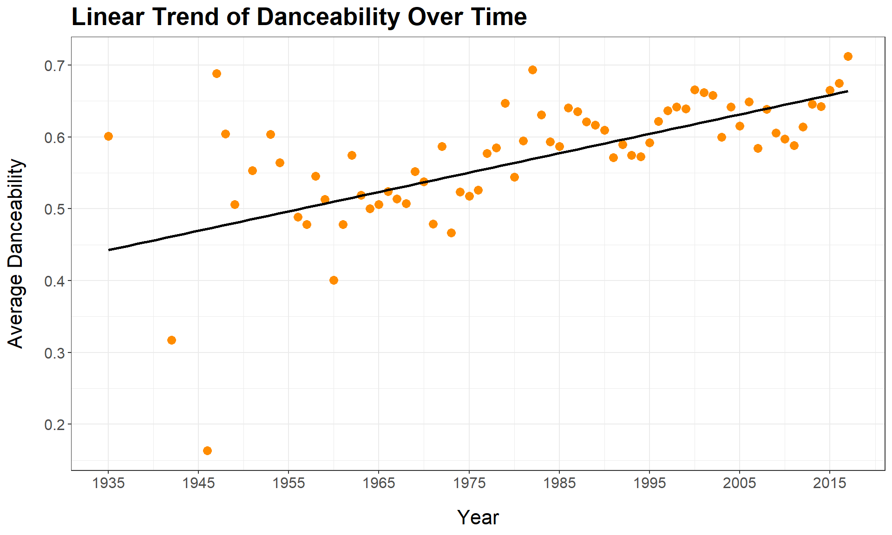
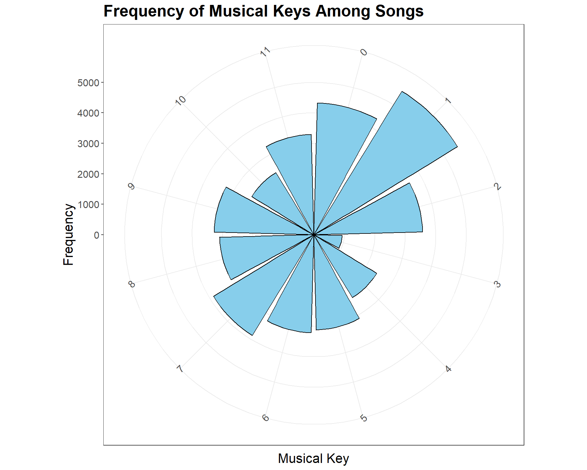
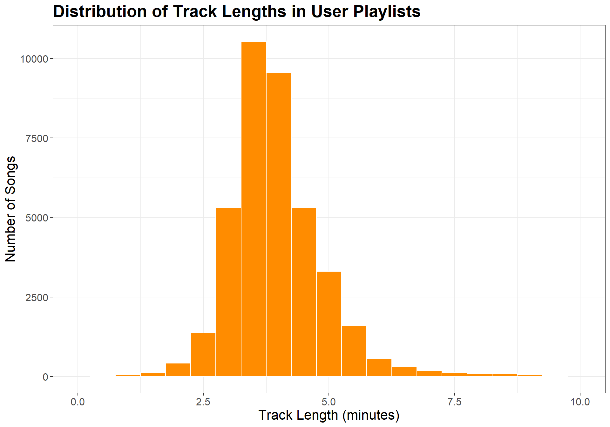

Pulse & Echo is a 12-track playlist designed to guide the listener through a dynamic musical journey. The sequence weaves through smooth transitions, emotional drops, and uplifting peaks, offering both familiar favorites and new sonic discoveries. With selections spanning synthwave, pop, indie, and Latin crossover, this playlist balances mood, tempo, and energy for moments of reflection, movement, or pure vibe.
🎯 Design Principles
🔬 Quantitative Harmony
Songs were selected based on closeness in tempo, key, and compatible values for acousticness, danceability, energy, and valence. All features were compared as a percentage deviation from the average anchor song values, ensuring smooth auditory transitions.
📈 Emotional Trajectory
The playlist follows a “rise–fall–rise” pattern. It begins upbeat, dips into more introspective and atmospheric tracks midway, and picks up again with energetic closers—creating an arc that feels cinematic and emotionally resonant.
🧮 Data-Driven Selection
Tracks were selected using a multi-step filtering process based on five key heuristics:
Co-occurrence with anchor tracks in user playlists
Same artist connections
Songs in the same year with similar Spotify features
Key and tempo compatibility
Feature similarity within ±25% of anchor song averages
Introduction
In this mini-project, we dive into the world of music analytics to craft The Ultimate Playlist. Using real Spotify data, we analyze both song popularity and audio features to uncover the key elements that make a song stand out. By exploring patterns in user behavior and musical traits, we aim to build a playlist that captures the essence of what listeners love most. Inspired by the legendary “All Rise” playlist, this project challenges you to define your own version of musical perfection.
Data Acquisition
Song Characteristics
Show the code
library(stringr)library(dplyr)library(knitr)library(scales)library(ggplot2)library(gridExtra)library(kableExtra)load_songs <-function() {library(readr)library(here)# Define the directory and file path dir_path <-here("data", "mp03") file_name <-"songs.csv" file_path <-file.path(dir_path, file_name) # Create directory if it doesn't existif (!dir.exists(dir_path)) {dir.create(dir_path, recursive =TRUE) }# Download file only if it doesn't existif (!file.exists(file_path)) { url <-"https://raw.githubusercontent.com/gabminamedez/spotify-data/refs/heads/master/data.csv"download.file(url, destfile = file_path, method ="auto") }library(readr) songs_df <-read_csv(file_path, show_col_types =FALSE)# Optional: clean column names if necessary# library(janitor)# songs_df <- clean_names(songs_df)return(songs_df)}songs_df <-load_songs()
This dataset contains audio features and metadata for a wide range of tracks. It includes details such as song name, artist(s), album, release year, and attributes like danceability, energy, and popularity. The data was downloaded from a GitHub mirror and required some cleaning—especially the artists column, which lists multiple artists in a non-standard format. The cleaned dataset was transformed into a tidy structure, with each row representing one song-artist combination.
This dataset is a large collection of Spotify user-generated playlists, provided as multiple JSON files. A custom function was written to responsibly download and parse the files only if not already available locally. Since the raw structure is nested and complex, the data was reshaped into a flat, rectangular format. Each row represents a single track within a playlist, including attributes like playlist name, track name, artist, album, and position within the playlist.
The table shows the 5 most popular songs, and how many time they appeared in different playlists.
What is the most popular track in the playlist data that does not have a corresponding entry in the song characteristics data?
Show the code
songs_df<- songs_df|>rename("track_id"= id)# joining the 2 datasets by the track ID joined_data <- songs_df|>left_join(rectangular_tracks_df, by ="track_id")count_of_NA <- joined_data|>summarize(na_count =sum(is.na(playlist_name)))# Find tracks in playlists_data not present in songsunmatched_tracks <- rectangular_tracks_df |>anti_join(songs_df, by ="track_id")# Count and find the most frequent unmatched trackmost_popular_unmatched <- unmatched_tracks |>count(track_name, artist_name, sort =TRUE) |>slice_max(n, n =1)
Most Popular Unmatched Song
Track Name
Artist Name
Play Count
One Dance
Drake
55
According to the song characteristics data, what is the most “danceable” track? How often does it appear in a playlist?
Show the code
#get the most danceable songmost_danceable<- joined_data|>group_by(name)|>arrange(desc(danceability))|>head(5)# counting number of appearencesdance_count<- rectangular_tracks_df|>filter(track_id == most_danceable$track_id[1])|>summarize(appereances =n())
The most danceable track in the dataset is Funky Cold Medina by Tone-Loc, which appears 1 time in the playlist “VACATION”
Which playlist has the longest average track length?
Show the code
rectangular_tracks_df <- rectangular_tracks_df|>group_by(playlist_name)|>mutate(avg_duration =mean(duration))|>ungroup()|>mutate(avg_duration = avg_duration /1000, # converting ms to secondsavg_duration_min = avg_duration /60) long_avg <- rectangular_tracks_df|>slice_max(avg_duration)
“classical” is the playlist with longest average track lenght, with an average duration of 411 seconds , or about 7 minutes for each song.
The most popular playlist on Spotify is Tangled with 1038 followers.
Identifying Characteristics of Popular Songs
Combining the Datasets
To analyze both song characteristics and playlist behavior, we use an inner_join to merge the playlist and song datasets based on track IDs.
This approach ensures that only songs appearing in both datasets are included in our analysis. Although this results in the loss of some playlist data (since not every track has corresponding song characteristics), it allows for a cleaner dataset with complete information. Given the differences in timing and structure between the two data exports, this is the most practical solution.
Show the code
# joining the 2 datasets by the track ID using inner_joininner_joined_data <- songs_df|>inner_join(rectangular_tracks_df, by ="track_id")
To explore how song popularity relates to playlist appearances, we examined the distribution of the popularity variable and set a threshold to define what counts as a “popular” songs.
Min
Max
Average
Median
75 Percentile
90 Percentile
6
92
63.81
65
72
77
The table above shows the popularity statistics of all the tracks in the dataset. We decide to use the 75 Percentile as a threshold to define a “Popular Song”, and the “90 Percentile” as a threshold for “Very Popular Songs”. Any track with a popularity index above 72 will be considered Popular , while any track with a popularity index above 77 will be considered Very Popular.
Is the popularity column correlated with the number of playlist appearances? If so, to what degree?
Show the code
# counting playilist appearances in the inner_jointed datasetinner_joined_data <- inner_joined_data|>group_by(track_id)|>mutate( playlist_appereance =n())|>ungroup()# getting the first occurence of each songpopular_songs <-inner_joined_data|>group_by(track_id)|>slice(1)|>arrange(desc(popularity))
The table below show the Top 5 most popular songs using Popularity Index
Song
Artist
Album Name
Popularity Index
# of Playlist Appearence
goosebumps
Travis Scott
Birds In The Trap Sing McKnight
92
35
Play Date
Melanie Martinez
Cry Baby
91
1
Jocelyn Flores
XXXTENTACION
17
87
11
Perfect
Ed Sheeran
÷
86
7
Shape of You
Ed Sheeran
÷
85
30
The table below show the Top 5 most popular songs by Playlist Appereances
The scatterplot shows a wide dispersion of points without a clear linear pattern, indicating a weak or no strong correlation between the popularity index and the number of playlist appearances. While a few popular songs do appear frequently in playlists, many others have high popularity but low appearances, or vice versa. This suggests that playlist frequency alone doesn’t strongly predict popularity.
Show the code
correlation <-cor(popular_songs$popularity, popular_songs$playlist_appereance, use ="complete.obs")
Upon further investigation, we found that the correlation between the 2 variable is 0.38, which indicates weak correlation, and validates our original thesis.
In what year were the most popular songs released?
The graph illustrates the average popularity of songs over time, showing a general upward trend—suggesting that songs from more recent years tend to be more popular.
Next to the graph, the table displays the Top 5 Most Popular Year in which songs were released.
In what year did danceability peak?
Show the code
# calculating average of dancebility for each yeardanceability <- inner_joined_data|>group_by(year)|>mutate(avg_danceability =mean(danceability))|>arrange(desc(avg_danceability))
In 2017 we see the higher danceability score, with an index of 0.71.
Show the code
danceability|>ggplot(aes(x = year , y = avg_danceability)) +geom_point(color ="darkorange", size =3) +labs(title ="Linear Trend of Danceability Over Time",x ="Year",y ="Average Danceability" ) +theme_bw() +theme(axis.title.x =element_text(margin =margin(t =15)),axis.title.y =element_text(margin =margin(r =15)),axis.text =element_text(size =12),axis.title =element_text(size =16),plot.title =element_text(size =20, face ="bold") ) +geom_smooth(method ="lm", se =FALSE, color ="black")+scale_x_continuous(breaks =seq(min(danceability$year), max(danceability$year), by =10))

Show the code
ggsave("danceability_plot.png")
This plot visualizes the distribution of danceability of tracks across the years. Danceability measures how suitable a track is for dancing, and values range from 0 to 1. Higher values indicate that the track is more suitable for dancing. This plot illustrates an upward trend in danceability over the years, suggesting that more recent tracks tend to be increasingly suited for dancing.
Which decade is most represented on user playlists?
To find the most represented decades in the playlists, we group the playlist data by decade and count how many times songs from each decade appear.
Show the code
# grouping by decadesinner_joined_data<- inner_joined_data|>mutate(decade =paste0((year %/%10) *10, "s"))library(scales)# sum of appereances in playlist by decaderepr_decades<- inner_joined_data|>group_by(decade)|>summarize(total_appearances =sum(playlist_appereance, na.rm =TRUE)) |>arrange(desc(total_appearances))|>mutate(total_appearances =number(total_appearances, big.mark =","))
Decade
Total Appearances in Playlists
2010s
469,475
2000s
54,649
1990s
19,889
1980s
11,031
1970s
9,041
1960s
3,733
1940s
500
1950s
223
1930s
2
🎵 Graph Description – Frequency of Musical Keys (Polar Plot):
This polar plot illustrates the frequency of musical keys, represented as numbers from 0 to 11, where each number corresponds to a musical key (e.g., 0 = C, 1 = C♯/D♭, 2 = D, etc.). The circular layout reflects the cyclical nature of musical keys, akin to the Circle of Fifths in music theory.
Each bar’s height indicates how often that key appears among the songs in user playlists. This visualization helps identify which keys are most common, offering insights into musical trends and preferences. Despite using numeric values, the cyclical arrangement of keys remains intuitive in this format.
Show the code
# Calculate the frequency of each keykey_frequency <- inner_joined_data |>group_by(key) |>summarize(count =n()) |>arrange(desc(count))# Create a polar plotggplot(key_frequency, aes(x =as.factor(key), y = count)) +geom_bar(stat ="identity", fill ="skyblue", color ="black") +coord_polar(start =0) +theme_bw() +labs(title ="Frequency of Musical Keys Among Songs",x ="Musical Key",y ="Frequency") +theme(axis.text.x =element_text(angle =45, hjust =1),axis.text =element_text(size =12),axis.title =element_text(size =16),plot.title =element_text(size =20, face ="bold"))

Track Duration Stats
Show the code
#convert duration in minutes inner_joined_data <- inner_joined_data |>mutate(duration_min = duration_ms /60000)# calculating mean and percentiles to see avg track lengthlength_info <- inner_joined_data |>summarize( avg_length =mean(duration_min),median_length =median(duration_min),shortest =min(duration_min),longest =max(duration_min),p25 =quantile(duration_min, 0.25),p75 =quantile(duration_min, 0.75) )length_info$avg_length <-round(length_info$avg_length, 2)length_info$median_length <-round(length_info$median_length, 2)length_info$shortest <-round(length_info$shortest, 2)length_info$longest <-round(length_info$longest, 2)length_info$p25 <-round(length_info$p25, 2)length_info$p75 <-round(length_info$p75, 2)
The table below summarizes key statistics about the distribution of track lengths (in minutes) among the songs included in user playlists. It includes the average and median track length, as well as the shortest and longest tracks in the dataset. Additionally, the table shows the 25th percentile and 75th percentile values, which define the interquartile range (IQR) — the range that contains the middle 50% of all track lengths.
We can see from the table that most tracks tend to be the range 3.4 and 4.4 minutes, suggesting a preference for mid-length songs.
Average
Median
Shortest
Longest
25 Percentile
75 Percentile
3.97
3.83
0.64
37.31
3.4
4.4
Show the code
ggplot(inner_joined_data, aes(x = duration_min)) +geom_histogram(binwidth =0.5, fill ="darkorange", color ="white") +labs(title ="Distribution of Track Lengths in User Playlists",x ="Track Length (minutes)",y ="Number of Songs" ) +theme_bw()+theme(axis.text =element_text(size =12),axis.title =element_text(size =16),plot.title =element_text(size =20, face ="bold"))+scale_x_continuous(limits =c(0, 10, 2))

🎧 Building a Playlist
My two anchor tracks are “Look at Me” by XXXTentacion and “goosebumps” by Travis Scott. To find songs that work well with my anchor tracks, I first identified all playlists that contain either of the two songs I selected. Then, I looked at what other songs appear on those same playlists. This method helps surface tracks that users often group with one of my anchors, suggesting they share similar vibes, styles, or transitions—making them strong candidates for inclusion in a cohesive playlist.
Show the code
# defining popularity level using the percentilesinner_joined_data<- inner_joined_data|>mutate(popularity_level =case_when( popularity >= popularity_stats$p90 ~"Very Popular", popularity >= popularity_stats$p75 ~"Popular",TRUE~"Not Popular" ) )anchor1 <-"Look At Me!"anchor2 <-"goosebumps"# playlists that include either songplaylists_with_either <- inner_joined_data |>filter(name %in%c(anchor1, anchor2)) |>distinct(playlist_id) |>pull(playlist_id)# songs in those playlists, excluding the anchor songsco_occurring_songs <- inner_joined_data |>ungroup()|>filter(playlist_id %in% playlists_with_either,!track_name %in%c(anchor1, anchor2)) |>count(track_name, artist_name, sort =TRUE)
Top 20 Songs Commonly Appearing with Anchor Songs
Track
Number of Appearances
Champions (Kanye West)
64
No Problem (feat. Lil Wayne & 2 Chainz) (Chance The Rapper)
48
Congratulations (Post Malone)
44
Bad and Boujee (feat. Lil Uzi Vert) (Migos)
42
iSpy (feat. Lil Yachty) (KYLE)
40
Sucker For Pain (with Wiz Khalifa, Imagine Dragons, Logic & Ty Dolla $ign feat. X Ambassadors) (Lil Wayne)
Drowning (feat. Kodak Black) (A Boogie Wit da Hoodie)
30
No Hands (feat. Roscoe Dash and Wale) - Explicit Album Version (Waka Flocka Flame)
30
Work REMIX (A\(AP Ferg) | 30|
|It's A Vibe (2 Chainz) | 28|
|pick up the phone (Young Thug) | 28|
|Black Beatles (Rae Sremmurd) | 26|
|Slippery (feat. Gucci Mane) (Migos) | 26|
|\)ave Dat Money (feat. Fetty Wap & Rich Homie Quan) (Lil Dicky)
24
Everyday (A$AP Rocky)
24
HUMBLE. (Kendrick Lamar)
24
Show the code
# Get key and tempo for the anchor songsanchor1_info <- inner_joined_data |>filter(name == anchor1) |>select(key, tempo) |>distinct()anchor2_info <- inner_joined_data |>filter(name == anchor2) |>select(key, tempo) |>distinct()# songs with similar key , tempo similar_songs <- inner_joined_data |>filter(!track_name %in% anchor1 &!track_name %in% anchor2) |>filter( (key == anchor1_info$key[1] &abs(tempo - anchor1_info$tempo[1]) <=5) | (key == anchor2_info$key[1] &abs(tempo - anchor2_info$tempo[1]) <=5) ) |>distinct(track_name, artist_name, key, tempo) |>arrange(key, abs(tempo - anchor1_info$tempo[1]))
🎛️ Songs with Similar Tempo & Key
The table below displays 251 songs that share a similar musical key and tempo with the selected anchor songs. These characteristics are commonly used by DJs to create smooth transitions between tracks. Songs were filtered to match the same key and have a tempo within ±5 BPM of the anchor song, ensuring musical coherence. The results are presented in the interactive table below for easy exploration.
🎤 Songs by Same Artists
Show the code
# get the 2 artists from anchor songsartist1 <- inner_joined_data|>filter(track_name == anchor1)|>select(artist_name)|>head(1)artist2 <- inner_joined_data|>filter(track_name == anchor2)|>select(artist_name)|>head(1)# songs by same artistssame_artists <- inner_joined_data |>filter(!(track_name %in%c(anchor1, anchor2))) |>filter(artist_name %in%c(artist1, artist2)) |>distinct(track_name, artist_name)
This table displays all songs by the same artists who performed the selected anchor songs, excluding the anchor songs themselves. These tracks were identified by matching the artist names and filtering for unique song titles. This approach highlights additional songs that share stylistic elements with the anchors, making them strong candidates for inclusion in a cohesive playlist.
🎙️ Songs released in the same year with similar characteristics
To identify songs that resemble the anchor tracks in musical characteristics, we averaged the acousticness, danceability, instrumentalness, and energy of both anchor songs. We then filtered songs within ±25% of these average values and from the same release years. The resulting table shows songs that closely match the overall style of the selected anchors.
#Getting relevant tracks from heuristicsrelevant_tracks <-bind_rows( co_occurring_songs|>select(track_name), same_artists|>select(track_name), similar_songs |>select(track_name), similar_char|>select(track_name) ) |>distinct()# non_popular songsplaylist_nonpopular <- inner_joined_data |>filter(name %in% relevant_tracks$track_name) |>filter(popularity_level =="Not Popular")|>select(name, artist_name, popularity_level)|>distinct()#popular songsplaylist_popular <- inner_joined_data |>filter(name %in% relevant_tracks$track_name) |>filter(popularity_level =="Very Popular"| popularity_level =="Popular")|>select(name, artist_name, popularity_level)|>distinct()# getting 8 Non popular songs, 6 popular songs, 6 Very popular songsfin_playlist <-bind_rows( playlist_nonpopular|>sample_n(8), playlist_popular|>filter(popularity_level =="Popular")|>sample_n(6), playlist_popular|>filter(popularity_level =="Very Popular")|>sample_n(6))
To build a well-rounded and personalized playlist, we began by identifying relevant tracks using several heuristic methods based on my two anchor songs:
Co-occurring songs that frequently appear in the same playlists.
Tracks by the same artists as the anchor songs.
Songs with a similar musical key and tempo, which would allow for smoother DJ transitions.
Songs with similar audio characteristics, such as acousticness, danceability, energy, and liveness.
These heuristics were combined into a single list of relevant_tracks, ensuring only distinct track names were included.
Next, I categorized the songs by popularity level: - Not Popular - Popular - Very Popular
Finally, I curated a final playlist by sampling:
🎶 8 non-popular songs
🎶 6 popular songs
🎶 6 very popular songs
This approach creates a balanced and diverse playlist, mixing well-known hits with lesser-known tracks that share musical and stylistic traits with the anchor songs.
🎧 Final Playlist Based on Heuristics and Popularity
To understand the sonic journey of my playlist “Pulse & Echo”, I analyzed the evolution of key audio features provided by Spotify. These features include:
Acousticness: Likelihood that a track is acoustic.
Energy: A measure of intensity and activity (e.g., fast, loud, noisy).
Danceability: How suitable a track is for dancing based on tempo, rhythm stability, and beat strength.
Tempo: The overall speed of the song (measured in BPM).
The line chart below displays how these metrics change across the 12 songs in the playlist, following the track order: